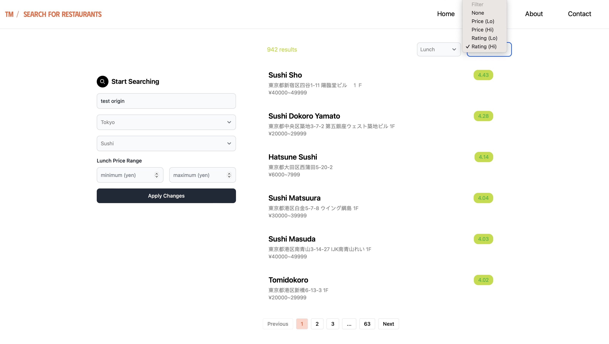

My Projects
A showcase of my most interesting creations.
Find Restaurants in Japan
TabeMaps
A Svelte-based website that allows users to find nearby restaurants in Japan. This was more of pet project I worked on with friends and while it never saw an official release, we had a blast sharing our ideas and creativity. I helped create the look and feel of the application, which was geared towards minimalism and practicality.
Bloom Book
A feature-rich mobile Android application that helps users manage their plant collections in a fun and pleasing UI. I worked alongside other SDSC students as build master, which meant performing research on best coding practices like MVVM, designing user schemas, client-side navigation, cloud functions, and managing our gitlab repository.
Website Redesign
ACM Artifical Intelligence
I joined UCSD's ACM AI in 2023 to help redesign their outdated web application. I worked with several developers to plan and implement our mockups into reactive components. We brought a new face and modern aesthetic to the final product that was fun and easy to use.
Video Game Development Club
Created an SSR website in Next.js, developed alongside with my friend Chase Peterson. As website manager, I helped design prototypes in Figma and implemented frontend components using Tailwind CSS. Created a novel blog system using React Markdown to convert markdown files into interactive pages. Implemented a newsletter signup form using MailChimp API to bring further engagement to club members.